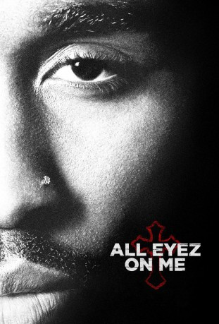

#7415 All Eyez on Me
 
 IMDB-Wertung: 5.8 / 10
IMDB-Wertung: 5.8 / 10  Tomatometer: 18
Tomatometer: 18  Metascore: 38
Metascore: 38 
Tupac Shakur wächst in den 70er- und 80er-Jahren in New York als Sohn aktiver Mitglieder der Black-Panther-Bewegung auf. In den Jahren nach seinem Umzug an die US-Westküste 1988 nimmt sein Leben dann eine einschneidende Entwicklung: Als Rapper 2Pac wird Shakur in kurzer Zeit zu einem Fixstern am Hip-Hop-Himmel und verkauft Millionen von Platten. Doch der Ruhm birgt auch seine Schattenseiten und Rivalitäten mit anderen Rappern, insbesondere mit The Notorious B.I.G. drohen zu eskalieren…
Jahr: 2017
Dauer: 140 Minuten
FSK: 12
Land: USA Studio: Codeblack FilmsTonspuren: DTS - ,
Untertitel: Deutsch,
Auflösung: 1080p (1920x808) Größe: 6297 MB
Genre: Drama, Musik, Biographie
Regisseur: Benny Boom
Drehbuch: Jeremy Haft
Soundtrack:
Darsteller:
- Demetrius Shipp Jr. als Tupac
 Danai Gurira als Afeni Shakur
Danai Gurira als Afeni Shakur Kat Graham als Jada Pinkett
Kat Graham als Jada Pinkett Hill Harper als Interviewer
Hill Harper als Interviewer Annie Ilonzeh als Kidada Jones
Annie Ilonzeh als Kidada Jones Lauren Cohan als Leila Steinberg
Lauren Cohan als Leila Steinberg Keith Robinson als Atron
Keith Robinson als Atron- Jamal Woolard als Biggie
- Dominic L. Santana als Suge Knight
 Cory Hardrict als Nigel
Cory Hardrict als Nigel Clifton Powell als Floyd
Clifton Powell als Floyd Jamie Hector als Mutulu
Jamie Hector als Mutulu- Chris Clarke als Shock G
- Rayven Symone Ferrell als Set
- Chanel Young als Aunt Linda
 Josh Ventura als Interscope Executive
Josh Ventura als Interscope Executive- Hamid-Reza Benjamin Thompson als Ronnie
- Bruce Davis als Officer Reeves
 E. Roger Mitchell als Tupac's Attorney
E. Roger Mitchell als Tupac's Attorney- Tom Thon als Judge
- Jermaine Carter als Outlaw
- Clay Edmund Kraski als FBI Agent Stiles
- Brian Kurlander als Drama Teacher
- Lian Amado als Radio Host
- Scott Hunter als Scott Whitwell
- Susan Willis als Jury Foreman
- David A. Flannery als Starlight Studio Engineer
 Kendrick Cross als F.O.I
Kendrick Cross als F.O.I- Rajeev Jacob als MTV Reporter
- Merrik Foune als Danielle
- Shyona Royston als Vegas Honey #2
- Hope Leigh als Interscope Receptionist
- Jeph Cangé als Marin Hater #1
- Malcolm Greenidge als EDI
- Harold House Moore als Dr. Dre
- Sean Baker als Big B
 Jermel Howard als Mopreme
Jermel Howard als Mopreme- Carrie Fleming als Mother
- Cathleen Trigg als News Anchor
- Kirk A. Jenkins als Brawler #2
- Damita Jane Howard als Stabbing Mom
- Philip Dido als Oakland Cop #1
 Jamal Weathers als Vegas Photographer
Jamal Weathers als Vegas Photographer- Phil Armijo als Johnny J , uncredited
- Michael Beal als Bill - Hotel Security , uncredited
 Michael Beasley als Pizza Boss , uncredited
Michael Beasley als Pizza Boss , uncredited- W.F. Bell als Prisoner , uncredited
- Karanda Kay Boutte als Groupie , uncredited
- Edward Bryan als African Guard , uncredited
- Carter Burch als Hotel Guest , uncredited
Datei: X:\2017(A-F)\All Eyez on Me (2017, FSK12, 1920x808).mkv seit 08.11.2017
Festplatte: HD 2017(A-Z)-2018(A-F)
 Es gibt insgesamt 152 Filme in der Gruppe '2017(A-F)'
Es gibt insgesamt 152 Filme in der Gruppe '2017(A-F)'